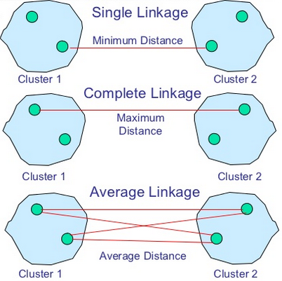
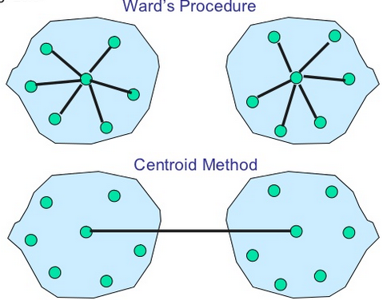
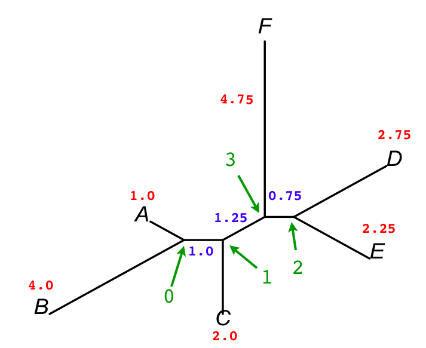
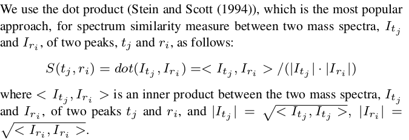
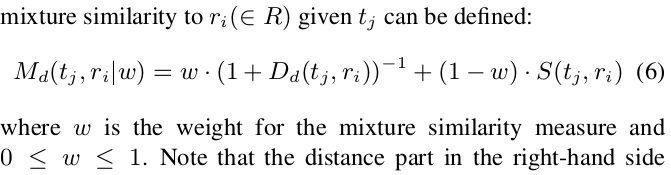
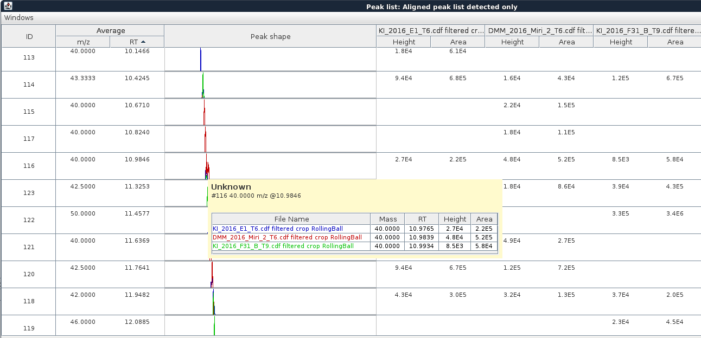
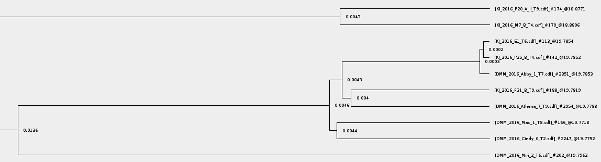

Join aligner GC (or Hierarchical Clustering aligner)
Description
This method aligns detected peaks in different samples through a match score. This score is calculated
based on the mass spectrum and retention time of each peak and ranges of tolerance stipulated in the parameters
setup dialog.
Algorithm: Agglomerative / hierarchical clustering approaches
How
They Work
Given a set of N items to be clustered, and an N*N distance (or similarity)
matrix, the basic process of hierarchical clustering (defined by S.C.
Johnson in 1967) is this:
- Start by assigning
each item to a cluster, so that if you have N items, you now have N clusters,
each containing just one item. Let the distances (similarities) between the
clusters the same as the distances (similarities) between the items they contain.
- Find the closest (most similar)
pair of clusters and merge them into a single cluster, so that now you have
one cluster less.
- Compute distances (similarities)
between the new cluster and each of the old clusters.
- Repeat steps 2 and 3 until all
items are clustered into a single cluster of size N. (*)
Step 3 can be done
in different ways, which is what distinguishes single-linkage from
complete-linkage and average-linkage clustering.
In single-linkage clustering (also called the connectedness
or minimum method), we consider the distance between one cluster and
another cluster to be equal to the shortest distance from any member
of one cluster to any member of the other cluster. If the data consist of similarities,
we consider the similarity between one cluster and another cluster to be equal
to the greatest similarity from any member of one cluster to any member
of the other cluster.
In complete-linkage clustering (also called the diameter or
maximum method), we consider the distance between one cluster and another
cluster to be equal to the greatest distance from any member of one cluster
to any member of the other cluster.
In average-linkage clustering, we consider the distance between one
cluster and another cluster to be equal to the average distance from
any member of one cluster to any member of the other cluster.
A variation on average-link clustering is the UCLUS method of R.
D'Andrade (1978) which uses the median distance, which is much more
outlier-proof than the average distance.
This kind of hierarchical
clustering is called agglomerative because it merges clusters iteratively.
There is also a divisive hierarchical clustering which does the reverse
by starting with all objects in one cluster and subdividing them into smaller
pieces. Divisive methods are not generally available, and rarely have been applied.
(*) Of course there
is no point in having all the N items grouped in a single cluster but, once
you have got the complete hierarchical tree, if you want k clusters you just
have to cut the k-1 longest links.
>> Available linkage criterion are:
- Single
- Complete
- Average
- Mean
- Centroid
- Ward
- Adjusted complete
- Neighbor Joining
The linkage criterion determines the distance between sets of observations as a function of the pairwise distances between observations.
Some commonly used linkage criteria between two sets of observations A and B are:
| Names |
Formula |
| Maximum or complete-linkage clustering |
 |
| Minimum or single-linkage clustering |
 |
| Mean or average linkage clustering, or UPGMA |
 |
| Centroid linkage clustering, or UPGMC |
 where where  and and  are the centroids of clusters s and t, respectively. are the centroids of clusters s and t, respectively. |
| Minimum energy clustering |
 |
where d is the chosen metric. Other linkage criteria include:
- The sum of all intra-cluster variance.
- The decrease in variance for the cluster being merged (Ward's criterion).
- The probability that candidate clusters spawn from the same distribution function (V-linkage).
- The product of in-degree and out-degree on a k-nearest-neighbour graph (graph degree linkage).
- The increment of some cluster descriptor (i.e., a quantity defined for measuring the quality of a cluster) after merging two clusters.
Linkage methods:


>> Neighbor joining:
In bioinformatics, neighbor joining is a bottom-up (agglomerative) clustering method for the creation of phylogenetic trees,
created by Naruya Saitou and Masatoshi Nei in 1987. Usually used for trees based on DNA or protein sequence data, the algorithm requires
knowledge of the distance between each pair of taxa (e.g., species or sequences) to form the tree.
Neighbor joining takes as input a distance matrix specifying the distance between each pair of taxa. The algorithm starts with a completely unresolved tree, whose topology corresponds to that of a star network, and iterates over the following steps until the tree is completely resolved and all branch lengths are known:
- Based on the current distance matrix calculate the matrix
 (defined below).
(defined below).
- Find the pair of distinct taxa i and j (i.e. with
 ) for which
) for which  has its lowest value. These taxa are joined to a newly created node, which is connected to the central node. In the figure at right, f and g are joined to the new node u.
has its lowest value. These taxa are joined to a newly created node, which is connected to the central node. In the figure at right, f and g are joined to the new node u.
- Calculate the distance from each of the taxa in the pair to this new node.
- Calculate the distance from each of the taxa outside of this pair to the new node.
- Start the algorithm again, replacing the pair of joined neighbors with the new node and using the distances calculated in the previous step.
The Q-matrix
Based on a distance matrix relating the  taxa, calculate as follows:
taxa, calculate as follows:
-
|

|
|
(1)
|
where  is the distance between taxa
is the distance between taxa  and
and  .
.
Distance from the pair members to the new node
For each of the taxa in the pair being joined, use the following formula to calculate the distance to the new node:
-
|
![\delta (f,u)={\frac {1}{2}}d(f,g)+{\frac {1}{2(n-2)}}\left[\sum _{{k=1}}^{n}d(f,k)-\sum _{{k=1}}^{n}d(g,k)\right]\quad](https://wikimedia.org/api/rest_v1/media/math/render/svg/fbb5a4b2a6fbec48a4bbc6d6fc1e351e5eb851e0)
|
|
(2)
|
and:

Taxa  and
and  are the paired taxa and
are the paired taxa and  is the newly created node. The branches joining and and and , and their lengths,
is the newly created node. The branches joining and and and , and their lengths,  and
and  are part of the tree which is gradually being created; they neither affect nor are affected by later neighbor-joining steps.
are part of the tree which is gradually being created; they neither affect nor are affected by later neighbor-joining steps.
Distance of the other taxa from the new node
For each taxon not considered in the previous step, we calculate the distance to the new node as follows:
-
|
![d(u,k)={\frac {1}{2}}[d(f,k)+d(g,k)-d(f,g)]](https://wikimedia.org/api/rest_v1/media/math/render/svg/29d8e77a0543fb3258d08396a6fb44d387a92ad8)
|
|
(3)
|
where is the new node,  is the node which we want to calculate the distance to and and are the members of the pair just joined.
is the node which we want to calculate the distance to and and are the members of the pair just joined.
Example:

>> How distance matrix between observations is obtained:
Score computing: rt * weight VS chem sim * weight
- Compute a similarity score based on chemical likelihood only
- Compute a similarity score based on RT likelihood only
- Determine a combined weighted (=mixture) score based on a mixture of the above two scores
Giving:
1. Chemical similarity measurement (chemSimScore))

2. Retention time score
Retention time score is normalized relatively to the RT window tolerance provided by the user (rtScore = (1.0d - rtDiff / rtMaxDiff))
3. Mixture score
The final mixture score (score = (chemSimScore * mzWeight) + (rtScore * rtWeight)).

A square matrix is generated by comparing all the scores, for all the pairs of peaks.
Method parameters
- Peak list name
- Name of the new aligned peak list
- Use original raw data file
- Chemical similarity is computed using unaltered m/z profile at given scan from the very oldest Raw Data File ancestor
(if it has not been removed). Unchecked: information are grabbed as usual
(from the data file the peak list to be merged was built from).
- m/z tolerance
- This value sets the range, in terms of m/z, for possible peaks to be
aligned. Maximum allowed m/z difference
- Weight for m/z
- This is the assigned weight for m/z difference at the moment of match score calculation between peak rows.
In case of perfectly matching m/z values the score receives the complete weight.
- Retention time tolerance type
- Maximum RT difference can be defined either using absolute or relative value
- Absolute RT tolerance
- Maximum allowed absolute RT difference
- Relative RT tolerance
- Maximum allowed relative RT difference
- Weight for RT
- This is the assigned weight for RT difference at the moment of match score calculation between peak rows.
In case of perfectly matching RT values the score receives the complete weight.
- Use apex
- Use apex scan for RT and MZ profile. Otherwise, 5% of the scans around the apex are used to redefine averaged RT and MZ profile.
- Use RT recalibration
- Use compounds with known identities to ease alignment. See "Identification - Custom JDX(s) search" help entry.
- Use DETECTED m/z only
- Use simplified spectra resulting from a previous 'merge step' (See "Peak detection - RT based peak merger" help entry)) to compute chemical similarity score.
- RT tolerance post-recalibration
- Ignored if "Use RT recalibration" is unchecked. Maximum allowed difference between two RT values after RT recalibration.
- Dendrogram text format
- Ignored if "Export dendrogram as TXT" is unchecked. possible values are: NEWICK (standard printing), or RAW (flat human readable non-standard printing).
- Dendrogram output text filename
- Name of the resulting TXT file to write the clustering resulting dendrogram to. If the file already exists, it will be overwritten.
New aligned peak list showing peaks from 3 different samples

Clustering result can be exported into RAW text or NEWICK format
The latter can be then browsed using common applications such as FigTree.

Inspiration was taken from: